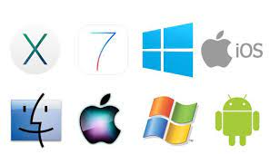

An operating system (OS) is the program that, after being initially loaded into the computer by a boot program, manages all of the other application programs in a computer. The application programs make use of the operating system by making requests for services through a defined application program interface (API). In addition, users can interact directly with the operating system through a user interface, such as a command-line interface (CLI) or a graphical UI (GUI).
An operating system brings powerful benefits to computer software and software development. Without an operating system, every application would need to include its own UI, as well as the comprehensive code needed to handle all low-level functionality of the underlying computer, such as disk storage, network interfaces and so on. Considering the vast array of underlying hardware available, this would vastly bloat the size of every application and make software development impractical.
Instead, many common tasks, such as sending a network packet or displaying text on a standard output device, such as a display, can be offloaded to system software that serves as an intermediary between the applications and the hardware. The system software provides a consistent and repeatable way for applications to interact with the hardware without the applications needing to know any details about the hardware.
As long as each application accesses the same resources and services in the same way, that system software -- the operating system -- can service almost any number of applications. This vastly reduces the amount of time and coding required to develop and debug an application, while ensuring that users can control, configure and manage the system hardware through a common and well-understood interface.
An operating system provides three essential capabilities: It offers a UI through a CLI or GUI; it launches and manages the application execution; and it identifies and exposes system hardware resources to those applications -- typically, through a standardized API.
UI. Every operating system requires a UI, enabling users and administrators to interact with the OS in order to set up, configure and even troubleshoot the operating system and its underlying hardware. There are two primary types of UI available: CLI and GUI.

General-purpose operating system. A general-purpose OS represents an array of operating systems intended to run a multitude of applications on a broad selection of hardware, enabling a user to run one or more applications or tasks simultaneously. A general-purpose OS can be installed on many different desktop and laptop models and run applications from accounting systems to databases to web browsers to games. General-purpose operating systems typically focus on process (thread) and hardware management to ensure that applications can reliably share the wide range of computing hardware present
Common desktop operating systems include the following:windows is Microsoft's flagship operating system, the de facto standard for home and business computers. Introduced in 1985, the GUI-based OS has been released in many versions since then. The user-friendly Windows 95 was largely responsible for the rapid development of personal computing.
Mac OS is the operating system for Apple's Macintosh line of PCs and workstations.
Unix is a multiuser operating system designed for flexibility and adaptability. Originally developed in the 1970s, Unix was one of the first operating systems to be written in the C language.
Linux is a Unix-like operating system that was designed to provide PC users a free or low-cost alternative. Linux has a reputation as an efficient and fast-performing system.
Mobile operating system. Mobile operating systems are designed to accommodate the unique needs of mobile computing and communication-centric devices, such as smartphones and tablets. Mobile devices typically offer limited computing resources compared to traditional PCs, and the OS must be scaled back in size and complexity in order to minimize its own resource use, while ensuring adequate resources for one or more applications running on the device. Mobile operating systems tend to emphasize efficient performance, user responsiveness and close attention to data handling tasks, such as supporting media streaming. Apple iOS and Google Android are examples of mobile operating systems.
Embedded operating system. Not all computing devices are general purpose. A huge assortment of dedicated devices -- including home digital assistants, automated teller machines (ATMs), airplane systems, retail point of sale (POS) terminals and internet of things (IoT) devices - - includes computers that require an operating system. The principal difference is that the associated computing device only does one major thing, so the OS is highly stripped down and dedicated to both performance and resilience. The OS should run quickly, not crash, and handle all errors gracefully in order to continue operating in all circumstances. In most cases, the OS is provided on a chip that is incorporated into the actual device. A medical device used in a patient's life support equipment, for example, will employ an embedded OS that must run reliably in order to keep the patient alive. Embedded Linux is one example of an embedded OS.